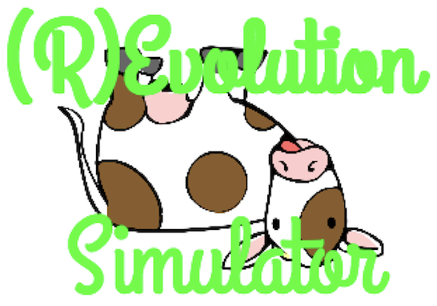

(R)Evolution Simulator
(R)Evolution Simulator è un programma scritto in linguaggio Python e permette di simulare l'evoluzione di una specie, la selezione naturale all'interno di questa e molti altri comuni processi naturali.
Che cos'è?
In tutti i campi della ricerca é in crescita esponenziale l’utilizzo di processori, mezzi di calcolo potenti che permettono di simulare ambienti naturali, in cui é possibile osservare piú facilmente fenomeni particolari al variare di parametri. Mediante i computer é possibile simulare voli spaziali, moti astronomici, ecosistemi, anche sotto forma di videogioco.
Il nostro progetto ha previsto la creazione di un programma (scritto in linguaggio Python) che simula all’interno di un ambiente virtuale i processi di evoluzione di una specie. Ogni creatura si comporta come nel mondo reale, ricercando l’ambiente piú favorevole per vivere, nutrendosi, riproducendosi e morendo se si trova in un ambiente troppo sfavorevole. Analizzando i dati si osserverá quindi come essi rispecchiano ció che accade realmente in natura, come avviene la selezione naturale e come in un certo ambiente sopravvivono gli animali piú adatti a vivere lí.
Attraverso questo progetto sará possibile osservare i meccanismi studiati dalla genetica delle popolazioni, la trasmissione dei caratteri genetici su larga scala e la selezione naturale degli individui della specie. Verranno analizzati vari caratteri (alcuni numerici e alcuni di tipo mendeliano) e il loro comportamento a confronto con l’equilibrio di Hardy-Weinberg e con la deriva genetica. Le creature da noi considerate possono ben rappresentare una qualunque specie di erbivori, i quali, pur avendo un comportamente piuttosto semplice, daranno la possibilitá di analizzare l’andamento sinusoidale della popolazione e la distribuzione differenziata sul territorio. L’interfaccia grafica, realizzata in Python, permette di visualizzare il tutto in modo diretto ed efficace.
L'interfaccia grafica
Nell’interfaccia grafica, i chunk sono rappresenta come quadratini, mentre le creature come cerchi. La dimensione dei cerchi puó rappresentare aspetti diversi della creatura, impostabili nel programma. Le creature di dimensioni maggiori hanno un’energia maggiore in quell’istante perché hanno trovato una maggiore quantitá di cibo nei tick precedenti. Anche il colore delle creature puó rappresentare aspetti diversi
- l’abbinamento azzurro/giallo rappresenta la distinzione dei due sessi;
- l’abbinamento rosso/grigio-bianco/blu rappresenta il fenotipo delle creature in relazione alla loro capacitá di resistere alla temperatura. In particolare, il rosso un fenotipo c (preferenza per il caldo), il blu un fenotipo l (preferenza per il freddo), il grigio un fenotipo N eterozigota e bianco un fenotipo N omozigota (preferenza per climi temperati).